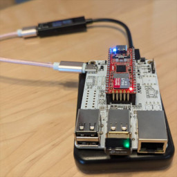

Milk-V DuoをWiFiアクセスポイントモードで動作させる

Milk-V DuoはShenzhen MilkV Technology Co., Ltd.が販売するRISC-V CPUを搭載する超小型のLinuxシングルボードコンピュータです。
機材
筆者が使用した機材は以下のとおりです。お使いの機材やソフトウェアに合わせて読み替えてください。
| 名前 | URL | 備考 |
| Ubuntu 22.04 LTS | https://jp.ubuntu.com/ | ビルドするPCのOS |
| Milk-V Duo | https://milkv.io/duo | |
| IO Board | https://milkv.io/docs/duo/io-board/usb-ethernet-iob | ドキュメントを参考にIO BoardのUSBを有効にしておきます。 |
| TP-Link TL-W725N | https://www.tp-link.com/jp/home-networking/adapter/tl-wn725n/ | 内蔵チップはRTL8188EU。他のRTL8188EU搭載ドングルでも同一ドライバで問題なく動作。 |
ソフトウェアの準備
Buildroot SDKの準備
公式のgithubリポジトリからBuildroot SDKをクローンします。(この辺は、公式のドキュメントでも説明されています)
こちらを参照の上、hostapdとdnsmasqを導入しておきMicroSDカードに書き込んでおきます。
Wi-Fiドライバの準備
筆者はこのドライバを使いました
クローンして、そのディレクトリに入ります。
makeでビルドします。
make ARCH=riscv CROSS_COMPILE=/path/to/sdk/duo-buildroot-sdk/host-tools/gcc/riscv64-linux-musl-x86_64/bin/riscv64-unknown-linux-musl- KSRC=/path/to/sdk/duo-buildroot-sdk/linux_5.10/build/cv1800b_milkv_duo_sd -j$(nproc)成功するとドライバのディレクトリに8188eu.koとその他複数のファイルが生成されます。
OS側の準備
Buildrootを書き込んだSDカードをPCに挿入します。
rootfsをマウントし、その下のmnt/system/koにさっき生み出した8188eu.koをコピーします。
ネットワーク情報の記述
rootfs/etc/hostapd.confを編集。
ctrl_interface=/var/run/hostapd
ctrl_interface_group=0
interface=wlan0
driver=nl80211
country_code=JP #居住国に合わせて変更
ssid=設定したいSSID
hw_mode=g
channel=11
macaddr_acl=0
auth_algs=1
ignore_broadcast_ssid=0
wpa=2 #セキュリティを設定しない場合この行は消す
wpa_key_mgmt=WPA-PSK #セキュリティを設定しない場合この行は消す
rsn_pairwise=CCMP #セキュリティを設定しない場合この行は消す
wpa_passphrase=設定したいパスワード #セキュリティを設定しない場合この行は消すrootfs/etc/dnsmasq.confを編集。
以下を追記しておきます。
今回はIPアドレスをAPを192.168.32.1で、DHCPは192.168.32.2起点で192.168.32.100までを払い出すようにしています。
interface=wlan0
dhcp-range=192.168.32.2,192.168.32.100,255.255.255.0,12hrootfs/etc/dhcpd.confを編集。
以下を追記しておきます。
interface wlan0
static ip_address=192.168.32.1/24rootfs/etc/network/interfacesを編集。
以下を追記しておきます。
iface wlan0 inet static
address 192.168.32.1/24
gateway 192.168.32.1この辺の設定はあくまで一例です。希望の設定になるように変更してください。
自動起動の設定
ドライバの自動挿入
/mnt/system/ko/loadsystemko.sh上方に以下を追記
insmod /mnt/system/ko/8188eu.kohostapdの自動起動
/mnt/system/auto.shとして自動起動に使用できるスクリプトがBuildroot側で用意されているので、有り難く使わせてもらいましょう。以下を追記
hostapd -B -iwlan0 /etc/hostapd.confMicroSDカードをアンマウントし、Duoに挿入して起動します。
うまく行けばDuoがWiFiアクセスポイントとして他のWiFi対応機器のscanで見つかるはずです。
(おまけ)繋いでみた
$ssh root@192.168.32.1
The authenticity of host '192.168.32.1 (192.168.32.1)' can't be established.
ED25519 key fingerprint is SHA256:1fuCsLqAyGYQgdq57kBuYbaWvIOhw5StKqqLoJ351Hc.
This key is not known by any other names.
Are you sure you want to continue connecting (yes/no/[fingerprint])? yes
Warning: Permanently added '192.168.32.1' (ED25519) to the list of known hosts.ためしにcpuinfo。
[root@milkv-duo]~# cat /proc/cpuinfo
processor : 0
hart : 0
isa : rv64imafdvcsu
mmu : sv39
[root@milkv-duo]~#これはなかなか応用が効きそうですね。カメラ付きロボットとか。